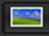
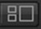
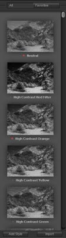

Silver Efex Pro offers two Filter Display Modes: Image Only and Image + Style Browser. Click on the Image & Style Browser button to display the Style Browser, which provides access to the custom styles available within Silver Efex Pro. Silver Efex Pro comes with over 20 preset styles to help create powerful and dynamic black and white images quickly and easily, and you can create your own.
Image Only
Click this button to show only the Image Preview.
Image + Style Browser
Click this button to open a new palette displaying thumbnail view of the available styles applied to the current image, next to the Image Preview area.
Style Browser Controls
The Style Browser allow you to pick any style and apply it to your image with one click. You can also add your own styles, update the styles, as well as Import and Export styles for sharing with other Silver Efex Pro users. You can also have favorite styles and batch process a style to multiple images*. Here are some quick tips on how to use the Style Browser: 